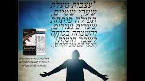
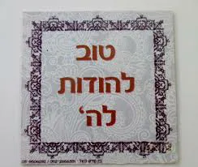
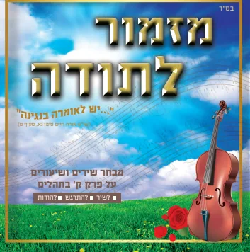

מכתב מרגש שכתב יהודי: בדורנו התגלה מפתח – מסטר חדש ומוצלח מאין כמותו. מפתח זה פותח את כל הדלתות ממש. ראשית (אולי זה החידוש הגדול והחשוב מכל) הוא פותח את דלתות לב האבן של דור עקבתא דמשיחא להתקרב לאבינו שבשמים ולהתרפק בערגה על רגש אהבה עצום לאבינו הטוב והמטיב. אנשים מעידים שמפתח זה שינה אותם מקצה לקצה, מחיים עצובים ואפורים לחיים שמחים ומאירים מאין כמותם, הם מעידים שמאז שלקחו את המפתח לידם פשוט נולדו מחדש ממש. בנוסף מפתח זה פותח את כל שערי השמים לתפילה וישועה – גם שערים שהיו נעולים במשך שנים, אלפי תפילות ודמעות שנשפכו ושבו כלעומת שבאו, ברגע שלקחו את המסטר החדש – מפתח ההודיה הדלתות נפתחו לרווחה ככתוב בואו שעריו בתודה. מפתח זה "מזמור לתודה" שמו, אינו עולה כסף, אין צורך לתרום לאף ארגון, אין צורך לעמוד בתור אצל אף "בבא – מחולל ישועות" או אצל כל מיני רפואות שאינם קונבנציונלית למיניהם, כי קרוב אליך הדבר מאוד בפיך ובלבבך לעשותו. אומרים את מזמור לתודה בפה עם הרבה רגש שבלב, וכל השערים אבל ממש כל השערים נפתחים. אנשים שגילו את מפתח הפלאים - מזמור לתודה, מעידים המזמור נהפך לחלק מהותי מנשמתנו ומחיינו. הם אומרים "אני לא מצליח לדמיין מה הינו עושים בלעדיו, הוא מלווה אותו על כל צעד ושעל בחיינו לטוב ולמוטב".
מתוך הספר נר למאה | לראית הספר נר למאה לחץ כאן

יהודי אחד שזכה לראות נס עצום בזכות ההודיה כתב לנו במכתב "אני חושב שהארגון הזה "קול תודה" עוסק ממש בהחייאת נפשות. זה דבר שמציל חיים של אנשים ממש כמו כל ארגוני החירום לשעות מצוקה, וחשוב שהציבור יידע זאת. תודה רבה לכם!"

אספר סיפור אחד שחוויתי על בשרי, בני השתעל ללא הפוגות, ידעתי שעם כאלה שיעולים הלילה לא אזכה לנוח על מטתי, קיבלתי על עצמי "בעז''ה אזכה לישון טוב הלילה ובבוקר אומר מזמור לתודה עם כל רגש ההודיה", וה-כן יאומן קרה במשך כל הלילה ישנתי, עד עשר דקות לפני השעה שכיוונתי בשעון לקום. בשעה זו בני התחיל להשתעל אבל בקצב מסחרר, לא ידענו מה לעשות תרופות ומים אוויר וכ''ו לא הועילו כלום, בלית ברירה שמתי אותו לישון במרפסת שלא יעיר את כולם, ונעמדתי לידו, התחלתי בברכות התורה ומיד לאחר מכן אמרתי את מזמור הפלאים - מזמור לתודה – וה-כן יאומן קרה, עוד הם מדברים ואני אשמע, עוד לא גמרתי את המזמור ובני נרדם היטיב היטיב ללא שיעול ואף לא אחד!!! מה אומר לכם לא ידעתי את נפשי - רק אמרתי שוב מזמור לתודה - על שנתן לנו ה' בדור זה מפתח פלאים לאנשים פשוטים - מזמור לתודה.
מתוך הספר נר למאה


לפני כמה שנים נתפרסם המעשה על יהודי אחד שהמתין כ"ח שנים לפרי בטן, ומאחר שכל הרופאים והרפואות, כמו גם הסגולות למיניהן, לא הועילו, קיבל החלטה בלבו להתחיל למנות ולספור את כל הטובות הגלומות בדבר זה גופא שאין לו בנים, טובה ליום, טובה ליום. עבד כן במשך שנה ומחצה, כאשר כל יום הוא מוצא טובה אחרת שלא היתה מוכרת לו עד כה, ויהי בחלוף שנה ומחצה - נתבשר בבשורה טובה.
הרב שמעון שפיצר מספר - הודיה פותחת שערים | מתוך שיעור בקול הלשון

הכרת טובה היא המעלה המוסרית המהנה ביותר וההנאה המוסרית ביותר. משפט זה לא כתב ר' ישראל סלנטר, אלא זה מופיע בספרו של הפרופסור רוברט אמונס. המחקר גילה היום היות הידוע לנו כבר אלפי שנים, שאין דבר נפלא יותר מאשר להודות ולהלל. כמו שאומרים – כי לך טוב להודות ולשמך נעים לזמר.
הפרופסור רוברט אמונס.

לפני כשלושים שנה אמר הרב אויערבך זצ"ל – למה אין שירים על מזמור לתודה. לפני כעשרים שנה – חובר שיר אחד. לפני כעשר שנים – חובר שיר שני. לפני כחמש שנים – חוברו חמש שירים. לפני כשנה – עשרות מנגינות על מזמור לתודה. חנוכה השנה – יצא דיסק שירים על מזמור לתודה.
מזמור לתודה – הולך וגדל | לדיסק שירים לחץ כאן